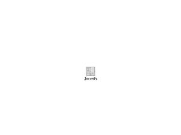
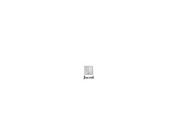

Trade Mark Journal No.2025/041 10 October 2025
UK00004267378 22 September 2025 (1,2,3,35)
Mark 1

Mark 2
Mark 3

- Class 1
- Solvents for paints; Polyurethane coatings [other than paints]; Polymer coatings [other than paints].
- Class 2
- Paints; Pigments for use in paints; Pigments for paints; Watercolor paints; Water-colors [paints]; Varnish paints; Watercolour paints; Coatings [paints]; Lacquers [paints]; Tempera paints; Paints and washes; Sealants [paints]; Tints for paints; Thinners for paints; Paints (Thinners for -); Tinters for paints; Spray-on paints; Oil paints; Textured paints; Additives for paints; Acrylic coatings [paints]; Anticorrosive paints; Paints (Enamel -); Enamel paints; Decorating paints; Metallic paints; Automotive paints; Mixed paints; Powder paints; Fabric paints; Spray coatings [paints]; Powdered paints; Exterior paints; Paints (Thickeners for -); Thickeners for paints; Textured coatings [paints]; Glazes [paints, lacquers]; Binders for paints; Acrylic paints for artists; Thinners for lacquers and other paints; Waterproof paints; Wood coatings [paints]; Coatings for wood as paints; Interior paints; Watercolour paints for use in art; Pigmented coatings used as paints; Anti-graffiti coatings [paints]; Retouching pens [paints]; Paints for machinery; Watercolor paints for use in art; Architectural paints; Coatings in the nature of paints; Paints for use in manufacturing; Water-repellent paints; Dispersion paints; Enamels in the nature of paints; Lacquers in the nature of paints; Fireproof paints; Paints (Fireproof -); Floor paints; Coatings in the nature of sprays [paints]; Oil paints for use in art; Organic coatings [paints]; Bactericidal paints; Paints (Bactericidal -); Sealants in the nature of paints; Anti-corrosive coatings [paints]; Car paints; Paint; Polyurethane coatings [paints]; Turpentine [thinner for paints]; Polyurethane finishes [paints]; Fire-retardant coatings [paints]; Waterproof coatings [paints]; Coloured paints for facades; Vehicle refinishes [paints]; Weathering preservatives [paints]; Weatherproofing coatings [paints]; Solvents for thinning paints; Coatings for forms [paints or oils]; Whites [colorants or paints]; Textured wall coatings [paints]; Blacks [colorants or paints]; Colorants for use in formulating paints; Undercoats [paints] for use on wood; Water based acrylic paints for use in house painting; Enamel coatings in the nature of paints; Preservatives for brickwork [paints]; Undercoats [paints] for use on metal; French polish; Shellac.
- Class 3
- Waxes for leather; Polishing wax; Wax (Polishing -); Carnauba wax for automotive use; Prepared wax for polishing; Shoe wax; Automobile wax; Car wax; Boot wax; Wax for parquet floors; Polish; Spray polish; Shoe polish; Shoe polish and creams; Shoe polish applicators containing shoe polish; Furniture polish; Car wax with a paint sealant; Car polish; Automobile polish; Floor wax; Boot polish; Metal polishes; Shoemakers' wax; Leather polishes; Polishes; Shoe polishes; Polish for furniture and flooring; Leather preserving polishes; Parquet floor wax; Wax (Parquet floor -); Shoe black [shoe polish]; Preservatives for leather [polishes]; Leather preservatives [polishes]; Furniture polishes.
- Class 35
- Retail services in relation to paints.
Jarrod's Wood Finishes Limited